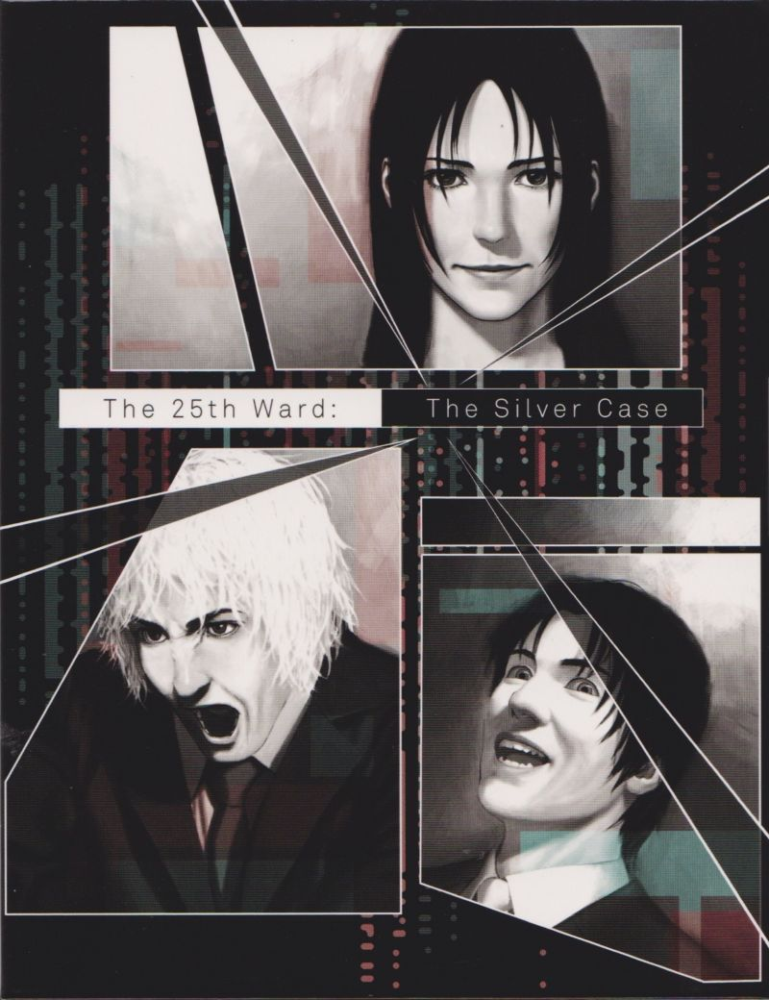

𝐌𝐚𝐦𝐚

I love this cover
My caring, impressive, and lovely Mama
Your heart is so pure, loving and calm
You stayed up all night
Just to make sure everything was okay with us
I swear to love you until I'm gone.
I love you and am grateful for everything you do.
But I hardly display it, and I usually have an unpleasant attitude.
I'm grateful that you brought me into this world.
For you to be my mother, Do you think I deserve it?
I have disappointed you frequently...
You always forgave my mistakes, no matter what.
I'm grateful to you for teaching me how to walk and talk.
Thank you for cooking my meals and completing my schoolwork.
Thank you for giving me a home
A bed, clothes and food to eat
But mostly,
Thank you for marrying my father
The man who loves you and appreciates us
Just as much as my mother